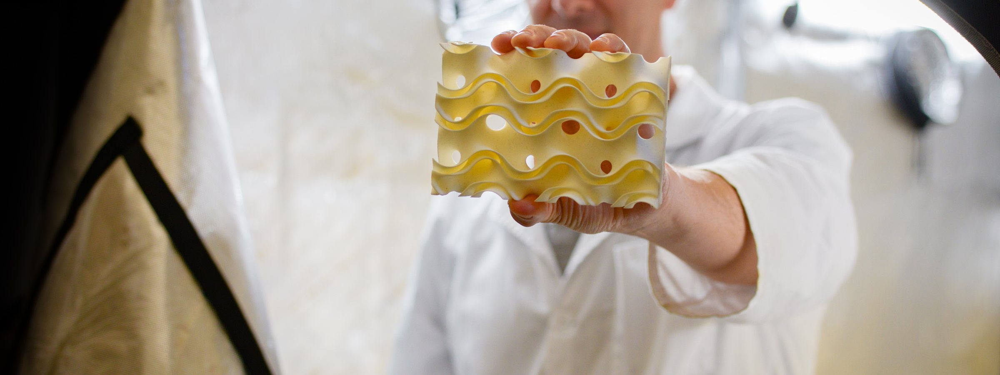

Understand the problem
We start with the constraint that has beaten everyone else — technical, operational, or economic — and agree on what “solved” would look like.
We solve industrial problems that have already defeated a serious attempt or two. The work runs from materials, through design and prototyping, to a pilot in a live plant. Only the last step counts.

Three disciplines, one small team, no hand-offs. The person who chose the material is the same person standing next to the pilot when it runs.
A structure that has never existed needs a material that has never been asked to do that. We develop and test the polymer composites our designs are made of, and the routes from additive to mass production. That means printing it, wetting it, loading it, and cycling it until we know where it fails — before a client ever sees it.
Clients usually arrive with a geometry they believe in and no way to make it survive its duty. We start by asking what it has to survive — chemistry, temperature, load, years — and then build a material path that gets it there.
We design structures that do a physical job — carry a load, shed heat, hold a liquid film, pass a gas — and we prove them at full scale, not in a rendering. Much of our work is in triply periodic minimal surfaces and related geometry, where shape does what chemistry or brute force used to. The prototype is the argument; if it doesn’t hold up on the bench it doesn’t leave the building.
We’re a company, not a bureau. We take a brief and give back a position, with the parts and the data to defend it — including the parts that told us we were wrong. What a client gets is a design they can argue with, not a drawing they have to trust.
A prototype proves an idea once. A pilot proves it every day, in someone else’s plant, next to equipment that has run for thirty years. We plan the trial, build what goes in, stand beside it while it runs, and turn what we learn into the next revision. When it holds, we help carry it into a product — manufacturing, supply, and the commercial shape it needs.
This is the step most clients balk at, and it is the only one that changes anything. A study or a prototype on its own leaves the problem exactly where it was. We would rather lose the engagement than skip the pilot.
Four steps, always in this order, and we don’t skip the last two. You bring the problem and the plant; we bring everything in between.
We start with the constraint that has beaten everyone else — technical, operational, or economic — and agree on what “solved” would look like.
Materials, geometry, and prototypes, tested against that definition. Most ideas die here. The one that doesn’t goes forward with data.
A pilot in your facility, at a scale that means something, run long enough to find out what breaks. We build it, install it, and stay with it.
Manufacturing route, supply, and commercial terms — the unglamorous work that turns a successful trial into something you can buy again next year.
We take on a few engagements at a time and turn most enquiries away, politely and quickly. This is what gets one through the door.
It has to change how a piece of industrial infrastructure gets made or run — a plant, a fleet, a whole category of equipment. If solving it once, at one site, is the whole prize, it’s a good problem and it isn’t ours. We’re here for the ones that move the industry.
We work best with leading companies whose own engineers have already taken a serious run at the problem and know exactly why it’s hard. You can put a pilot in a real facility and you want to. We don’t do feasibility studies for the curious, and we’re not the first call — we’re the one after that.
Materials through pilot through product, understood and funded as one arc from the start. Small, scoped jobs — a prototype, a study, a report — are not what we do, however interesting, and we say so on the first call, not the last. It has cost us work. It’s also why the work we keep tends to finish.
Bring the problem your team is stuck on. If it’s the right shape we’ll ask hard questions back. If it isn’t, we’ll tell you quickly.
We reply within 48 hours.